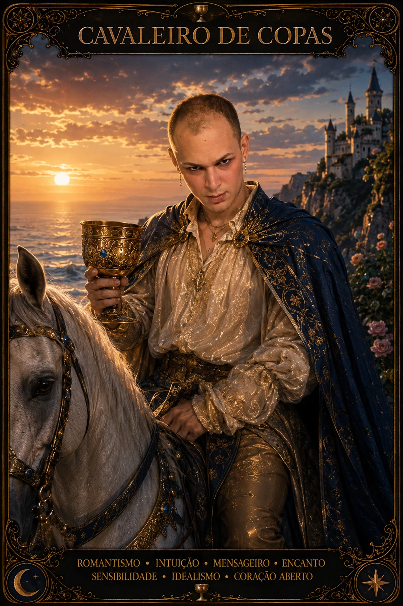

BIBLIOTECA DAS 78 CARTAS · COPAS
Cavaleiro de Copas no Tarot
Cavaleiro de Copas representa o movimento de seguir uma visão afetiva, estética ou idealista e tentar transformá-la em gesto. Esta carta pede que a experiência emocional seja levada a sério sem ser transformada em destino inevitável. Em Copas, sentir é informação valiosa, mas a interpretação amadurece quando emoção, fatos, limites e contexto conseguem conversar. A profundidade desta carta está em perguntar não apenas o que o coração deseja, mas que tipo de vínculo ou escolha pode sustentar esse desejo no tempo.
- movimento afetivo
- romantismo
- convite
- ideal
- busca do coração
- Arcano
- Arcano Menor
- Elemento
- Água
- Naipe
- Copas
- Chave
- movimento e busca
- Orientação
- Direta
SIGNIFICADO E ENERGIA
O que Cavaleiro de Copas revela
Como energia do dia, Cavaleiro de Copas convida a expressar sentimento, apresentar uma proposta ou aproximar-se de algo que inspira, mantendo os pés na realidade. Observe sinais do corpo, mudanças de humor e qualidade das trocas antes de construir conclusões. Se algo tocar profundamente você, dê espaço para sentir e depois traduza a sensação em uma pergunta verificável. O dia fica mais fértil quando sensibilidade não é usada para adivinhar o outro, e sim para perceber necessidades, valores e próximos passos possíveis.
POTENCIAL
Luz
Na luz, Cavaleiro de Copas favorece romantismo, diplomacia, criatividade, gentileza e coragem para oferecer algo emocionalmente significativo. Essa potência aparece quando você consegue permanecer aberta ao afeto sem abandonar critério. A carta lembra que receptividade não é passividade: às vezes acolher exige dizer sim, às vezes exige dizer não, e muitas vezes exige esperar informação suficiente. Quando a energia está integrada, emoção amplia consciência em vez de estreitar o campo de escolha.
PONTO DE ATENÇÃO
Tensão
Na tensão, podem aparecer sedução sem sustentação, promessas bonitas, fuga para fantasia, indecisão prática ou tendência a apaixonar-se pela própria narrativa. Essa é a complexidade normal da própria carta quando emoção se torna excesso, bloqueio ou defesa. O ponto de atenção é perceber onde a narrativa interna está crescendo mais rápido do que os fatos. Em vez de se julgar por sentir intensamente, investigue qual necessidade existe por trás da reação e qual limite impediria que a emoção comandasse uma decisão irreversível.
VÍNCULOS E RECIPROCIDADE
Cavaleiro de Copas no amor
Amor
No amor, Cavaleiro de Copas fala de aproximação romântica, convite ou demonstração de afeto que só ganha peso quando acompanhada de consistência. A carta não comprova pensamentos secretos, fidelidade, destino ou sentimento de outra pessoa. O que pode ser lido com responsabilidade é a dinâmica disponível: qualidade da comunicação, reciprocidade, consentimento, presença, coerência e capacidade de reparar. Se houver dúvida, transforme a leitura em uma conversa concreta. Relações profundas não precisam de certeza mágica; precisam de verdade suficiente para que duas pessoas possam escolher livremente.
Relacionamentos
Nos relacionamentos em geral, Cavaleiro de Copas recomenda usar delicadeza para conversar sem manipular pelo charme ou evitar temas incômodos. Família, amizade e parceria carregam histórias e expectativas diferentes, por isso proximidade não elimina a necessidade de limite. Observe se você está escutando o que a pessoa realmente disse ou respondendo ao papel que aprendeu a desempenhar. Uma boa aplicação desta carta aumenta clareza e autonomia para todos, em vez de criar dependência emocional ou obrigação de adivinhar necessidades.
VIDA MATERIAL
Carreira e dinheiro
Carreira
Na carreira, Cavaleiro de Copas pode ser aplicado a propostas criativas, negociação, áreas artísticas, comunicação e trabalhos que exigem sensibilidade e apresentação. Copas lembra que trabalho também envolve motivação, clima, confiança e sentido, mas esses fatores precisam encontrar estrutura, competência e resultado. Se uma decisão profissional estiver carregada de emoção, escreva critérios antes de escolher. O objetivo não é eliminar sentimento, e sim impedir que entusiasmo, medo de rejeição ou necessidade de aprovação substituam análise de função, prazo, responsabilidade e consequência.
Dinheiro
No dinheiro, a leitura de Cavaleiro de Copas pede atenção a não deixar estética, status ou impulso romântico comandarem gastos; propostas encantadoras ainda precisam de números. Emoção influencia consumo, generosidade, risco e sensação de segurança, por isso vale separar impulso de planejamento. Antes de gastar, emprestar, investir ou assumir compromisso financeiro importante, verifique números e limites. Cuidado e prazer podem fazer parte do orçamento; o problema começa quando recursos são usados para comprar alívio emocional, manter uma imagem ou tentar garantir afeto que deveria existir por escolha.
CAMINHO INTERIOR
Espiritualidade
Na espiritualidade, Cavaleiro de Copas convida a seguir o que inspira pode abrir caminhos, mas propósito espiritual se mede também pela forma como você age e cuida das consequências. O simbolismo de Copas é poderoso porque fala de imaginação, sonho, memória e vida interior, mas ele funciona melhor como espelho de autoconhecimento do que como prova objetiva. Use a carta para formular perguntas, contemplar e perceber padrões de sentimento. Qualquer intuição que envolva fatos sobre outras pessoas deve permanecer hipótese até encontrar evidência, comunicação ou consentimento.
LINGUAGEM VISUAL
Símbolos de Cavaleiro de Copas
- cavaleiro com taça
- cavalo em passo calmo
- rio
- asas no elmo ou botas
- paisagem aberta
LEITURA EM CONJUNTO
Combinações com Cavaleiro de Copas
Uma combinação amplia perguntas e contexto; ela não transforma possibilidade em destino.
Cavaleiro de Copas + Cavaleiro de Espadas
A mesma etapa encontra dois territórios: afeto, vínculo e imaginação dialoga com pensamento, verdade e decisão. Observe onde uma dimensão apoia ou contradiz a outra.
Cavaleiro de Copas + O Carro
O padrão de Cavaleiro ganha uma chave arquetípica em O Carro; a combinação amplia consciência antes de transformar símbolo em decisão.
Cavaleiro de Copas + Rainha de Copas
A energia de Cavaleiro de Copas aponta para Rainha de Copas: identifique o aprendizado necessário para que afeto, vínculo e imaginação avance sem perder medida.
INTEGRAÇÃO
Desafio e conselho
Desafio
O desafio central de Cavaleiro de Copas é transformar ideal em compromisso verificável. Esse aprendizado exige tolerar ambivalência: duas emoções podem coexistir, uma relação pode ter beleza e limite ao mesmo tempo, e uma despedida pode conter amor sem precisar ser revertida. Maturidade emocional não é sentir menos; é aumentar o espaço entre sentir e decidir. Quando esse espaço existe, você pode reconhecer vulnerabilidade sem entregar a ela o volante de toda a situação.
Conselho
Conselho de Cavaleiro de Copas: leve o coração junto, mas peça que ele caminhe ao lado de fatos, prazo e responsabilidade. Pergunte o que é fato, o que é sentimento, o que é necessidade e o que ainda precisa ser confirmado. Proteja sua dignidade e a autonomia de quem está envolvido. Se a carta trouxer conforto, use-o para agir melhor; se trouxer desconforto, use-o para investigar com mais cuidado. O Tarot ganha profundidade quando devolve escolha, e não quando tenta substituir a realidade.
PERGUNTA DE REFLEXÃO
Estou oferecendo algo que consigo sustentar ou apenas uma versão bonita do que gostaria de ser capaz de oferecer?
Ação práticaAção prática: Escolha uma intenção afetiva ou criativa e transforme-a em um gesto concreto com data, limite e responsabilidade definidos. Ao final do dia, registre o que mudou depois desse gesto e o que permaneceu apenas como hipótese. Essa revisão transforma a carta em ferramenta de aprendizagem e evita que uma impressão emocional seja confundida com confirmação automática.
CONTINUE A JORNADA
O Tarot é um universo de 78 vozes
Explore todas as cartas em posição direta ou abra a mesa do Tarot Livre para revelar imagens sem repetição.